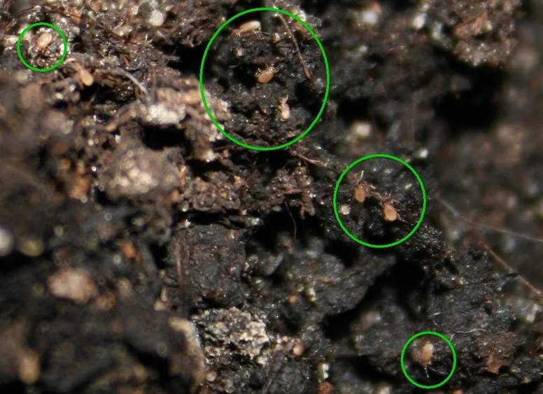
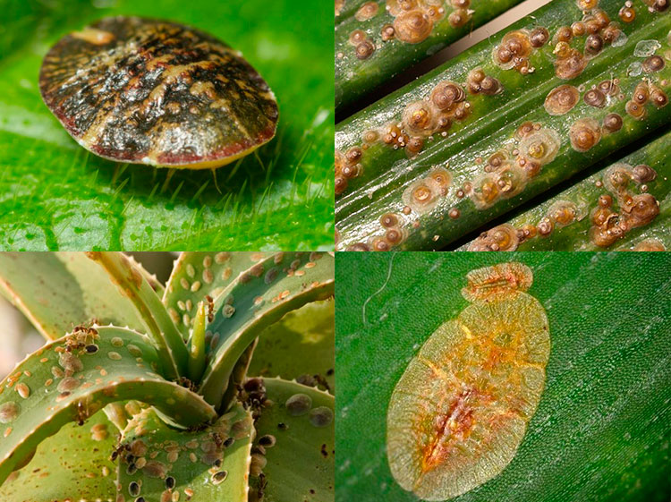

Домашние растения
Вредители
Несмотря на хороший уход и удачное расположение, на наших растениях могут все же появиться вредители.
Правда, радует то, что в квартире, количество их видов значительно меньше, чем в естественных условиях.
Залог успешной борьбы - правильное и своевременное определение вида вредителя. Обязательно осматривайте все растения раз в неделю. Учтите, что чаще всего вредители находятся на молодых листьях, в цветах и бутонах. Большинство из них видно невооруженным глазом, но некоторых можно разглядеть только в лупу.
Некоторых вредителей и вообще нельзя увидеть, поскольку, например, многие виды минирующих мушек живут в проводящих путях или в листьях растения. Их можно распознать только по симптомам болезни, которую они вызывают.
Вредители в почве комнатных растений

- Подуры
- Нематоды
- Дождевой червь
- Уховертка
- Многоножка
- Почвенные мушки
Вредители на самих комнатных растениях

- Паутинный клещ
- Тля
- Мучнистый червец
- Белокрылка
- Щитовки, ложнощитовки
- Трипсы
- Гусеницы
- Слизни
Профилактика вредителей комнатных растений
Прежде всего нужно постараться избежать появления вредителей в почве и на самих комнатных растениях. Поэтому для борьбы с комнатными вредителями обязательно используйте своевременные меры профилактики:
- регулярный осмотр,
- соблюдение режима полива и освещения,
- своевременная пересадка в качественный грунт,
- доступ свежего воздуха,
- недопущение скученности растений.